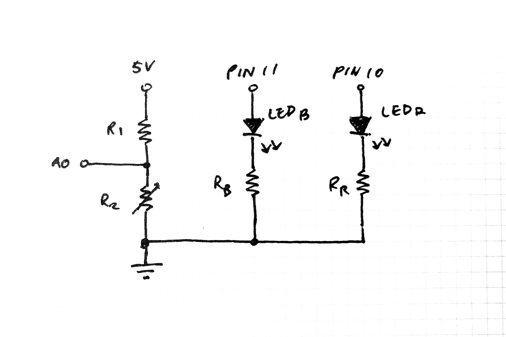
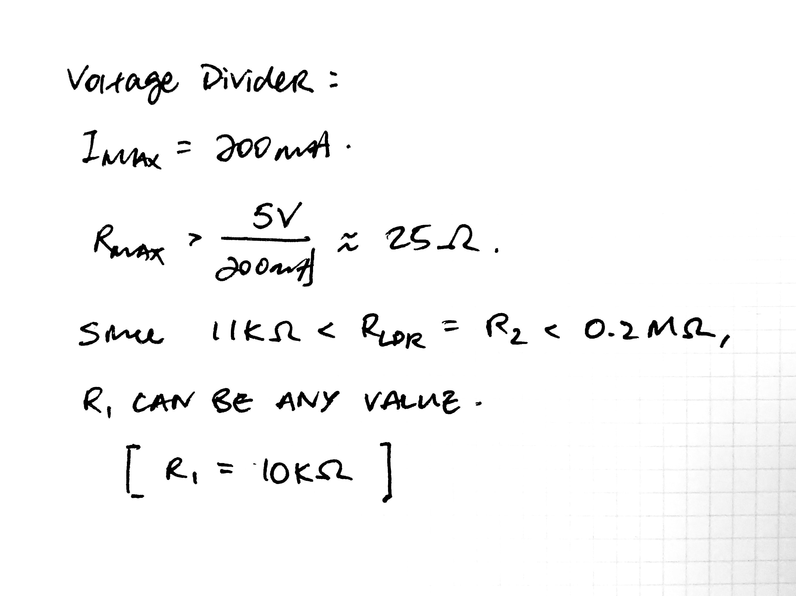
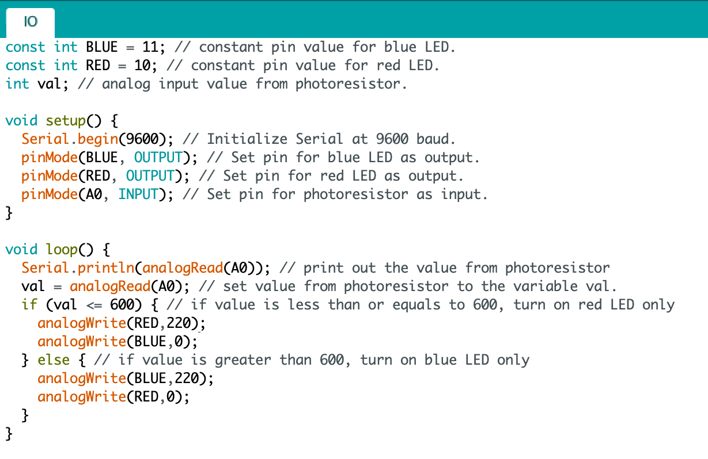

Schematic

In this circuit, the blue and red LEDs are connected in parallel through pins 11 and 10 respectively. Each LED is then connected seperate resistors and then to a common ground. The voltage divider circuit is created with a fixed resistor followed by a photoresistor in series with a pin connected in between them for voltage readings.
Resistance Calculations
Since the same LEDs are used in this circuit as that of assignment 2, the same calculations are conducted for the additional resistances required for each LED. Final resistances are picked based on what is available.
Voltage Divider Calculations

The minimum required total resistance is calculated for the voltage divider based on the maximum current allowed throw the Vcc to ground pins (which is 200mA). Final resistances are picked based on what is available.
Arduino .ino File

The range of input values coming from the photoresistor pin is initially determined using the serial monitor. After knowing the range for the given environment, I set up the if statements for the red and blue LEDs (around 600). Since the analogWrite function has a maximum write value of 255, I decided to set the high value at 220 value just in case it gets too bright.